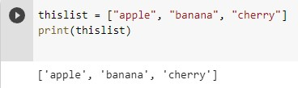
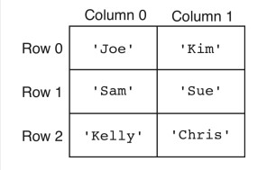
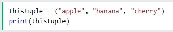
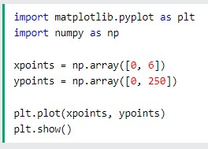

List and Tuples
List
List คือ โครงสร้างของข้อมูลชนิดหนึ่งของภาษา Python ที่เก็บข้อมูลในรูปแบบแบบลำดับ (Sequence) ซึ่งจะมีตัว Index ที่ทำหน้าที่ระบุตำแหน่งของข้อมูลแต่ละตัวที่อยู่ใน List.
List Method
append() - เพิ่ม Element ในตอนท้ายของรายการ
clear() - ลบทุก Element ใน List
copy() - ทำสำเนา Element ใน List ไว้ในตัวแปลใหม่
count() - การนับจำนวนค่า Element ที่กำหนดที่อยู่ใน List
extend() - คือการเพิ่ม Element จากตัว List อื่นมา List ล่าสุด หรือการเพิ่มเข้าด้วยกัน
index() - คืนค่าตำแหน่ง index ของ Element ใน List
insert() - การเพิ่ม Element ลงไปใน List ในตำแหน่งที่กำหนด
pop() - การเลือกเอา Element ตัวในตำแหน่งที่เลือกออก
remove() - การเลือกลบ Element โดยกำหนดชื่อของ Element เลย
reverse() - การสลับตำแหน่งจากหน้าไปหลัง กลายเป็น หลังไปหน้าของ Element
sort() - การเรียงตำแหน่ง Element โดยเรียงจากตัวอักษร A-Z
Two dimensional lists
A list in R is basically an R object that contains within it, elements belonging to different data types, which may be numbers strings or even other lists. Basically, a list can contain other objects which may be of varying lengths. The list is defined using the list() function in R.
A two-dimensional list can be considered as a “list of lists”. A two-dimensional list can be considered as a matrix where each row can have different lengths and supports different data types.

Tuples
Tuples Tuple จะคล้ายกับ List แต่สิ่งที่แตกต่างกันคือ Tuple นั้นเป็นประเภทข้อมูลที่ไม่สามารถเปลี่ยนแปลงได้ (Immutable) หรือกล่าวอีกนัยหนึ่ง หลังจากที่ประกาศตัวแปรและกำหนดค่าให้กับ Tuple แล้ว มันจะไม่สามารถเปลี่ยนแปลงค่าได้ในภายหลัง ในขณะที่ List สามารถทำได้
เนื่องจากว่า Tuples นั้นไม่สามารถเปลี่ยนแปลงค่าได้ ดังนั้นมันจึงมักจะใช้เก็บข้อมูลที่มีประเภทแตกต่างกันซึ่งจะทำงานได้ดีกว่า List และในการใช้งาน Loop กับ Tuple จะเพิ่มความเร็วขึ้นเล็กน้อย นอกจากนี้เรายังสามารถใช้ Tuple เป็นค่าคงที่สำหรับข้อมูลที่ไม่ต้องการให้เปลี่ยนแปลงได้
การประกาศ Tuple ในภาษา Python
สามารถทำได้หลายวิธี รูปแบบพื้นฐานของมันคือสมาชิกของ Tuple ทุกตัวจะอยู่ภายในวงเล็บ () และคั่นสมาชิกแต่ละตัวด้วยเครื่องหมายคอมมา (,)

mathplot
ไลบรารีที่นิยมใช้มากที่สุดในการพลอตกราฟสองมิติจาก array. มีจุดเริ่มต้นมากจากการจำลองคำสั่งพวกกราฟฟิคของ MATLAB. สามารถแสดงผลข้อมูลได้อย่างรวดเร็วและสามารถบันทึกผลที่ ได้ออกมาเป็นรูปภาพได้หลายรูปแบบ
ตัวอย่างโค้ดการลากเส้นวาดกราฟจากตำแหน่ง (0 , 0) ไปที่ตำแหน่ง (6 , 250)
